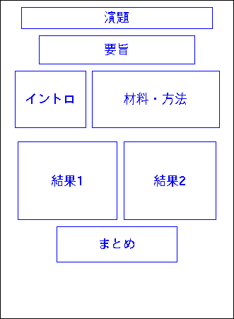
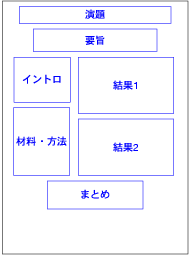

ポスター作成おぼえがき
まえがき
2005年3月に大阪で行われた日本生態学会において、 ポスター賞最優秀賞(植物の繁殖・生活史部門)を頂きました。
やはりポスター賞に応募するとなると、
それなりにポスター作りに力が入ります。
今回、どういう点に気を配り、 どういうポスターを作ったのか、 覚え書きとしてまとめます。
何かの参考になれば幸いです。
※後の追記：当時はPDでも日本生態学会ポスター賞に応募でき、また受賞回数にも制限がありませんでした。
発表ポスターのPDF約730KB
※図表のデータはダミーです。
作成スケジュール
まず、発表内容ですが、 発表前年にはデータ採集と解析が終わっていました。
前年9月に北大院・地球環境のCOEポスドクの成果報告会があり、 その時点で結果を若干喋っています。
そのため、研究内容は解析から考察まで含め、 全て終わった段階での学会エントリーでした。
全て終わった段階でエントリーできていれば、 演題も要旨も含みを持たせずに、そのものズバリのものが出せます。
特に演題は印象と集客力を決める大きな要素ですから、 解析が終わった段階で学会エントリーしましょう (本来そうあるべきですし)。
演題・要旨
エントリー〆切の数日前から 演題を練りました。
演題は半日かけて、3案を自分で作りました。 厳密には忘れましたが、
炭素安定同位体を用いたトドマツのシュート間の光合成産物移動のトレース実験
などの、 長ったらしいタイトルが多かったように覚えています。
それらの中から比較的ましなもののを 石井氏(当時地域生態のPD)に選んでいただこうとしたところ、 氏から改善案を頂くことができ、 それぞれの案を折衷した形で、
トドマツの先端枝はなぜ長いのか －炭素安定同位体を用いた光合成産物移動のトレ－ス実験－
という演題案を作成しました。
これを共著者の甲山先生に見て頂いたところ、 回りくどいことを嫌う先生から 更に御意見を頂くことができ、結局
トドマツの先端枝はどこから光合成産物を得ているか －炭素安定同位体を用いた光合成産物移動のトレ－ス実験－
という直接的で聴衆の興味をひいてくれそうなタイトルに落ち着きました。
この過程で、演題決定までに2、3日かかっています。
演題が決まり、意気揚々とエントリー (締切日午前中でしたが…)。 最後まで迷った末に ポスター賞参加を選択しました。
要旨は解析が終わっていたので、特に悩まずに書けました。
ポスター作成
スケジュール
3月はじめにインフルエンザにかかってしまい、 ポスター作成に取りかかれたのは発表の約2週間前になってからでした。
発表内容は固まっていたので慌てはしませんでしたが、 日程的にはかなり厳しいなと覚悟を決めました。
発表内容
まず最初に 何をどこまで話すのか決めます。
データは大量にあるでしょうが、 全て見せては大変見にくいポスターになります。
大量のデータと内容を詰め込んだ発表も実際見掛けますが、 単純に筋をまとめ、最小限の結果のみ提示することを心がけた方が 良いのではないでしょうか。
このことに抵抗を覚える方もおられるようですが、 聴衆の興味に合わせて発表時間を変化させることができるのが ポスター発表の強みであるはずです。 最小限に押さえても、 興味のある人であれば更に深い内容を話したり、 発展的な内容を プリントアウトして持ってゆき、 見せることもできます。
私の場合、 結果の図表を2枚に押さえ、 ポスターに書く内容を、 特に考察の部分で大幅に削ることにしました。
割り振り
次に おおざっぱな割り振りから始めました。
まず、 A0印刷を利用することに決めます。 昨今は、A0印刷が主流になって来ました。 A0印刷は配置の自由度が上がり、見栄えも良いです。 費用がかかる、持ち運びが不便などのマイナス面を踏まえても、 あえてA0印刷を避ける必要は無いように感じています。
A0用紙にどう割り振ってゆくかですが、 基本的なテンプレートは前回大会のものを用いることにして、 下書きをしてゆきました。

演題の下に要旨を持ってきました。 演題下は、もっとも目立つ一等地です。 ここに要旨を持ってきたのは、 とりあえず、さらっとポスターを見る人にとって 「どういうポスターか」を知る手がかりが 一番大切ではないかと考えたからです。
次にイントロ、材料方法と論理の流れに沿った並びとしました。 論理の流れはともかく、通常この位置が最も見やすい場所です (聴衆の中でもっとも人数の多いであろう、 身長160～170cm程度の人にとって 目の位置よりやや下になる、 床面から130cm～140cm程度の高さの部位が見えやすいでしょう。 多くの場合、ポスターが掲載されるパネル上端の 床面からの高さは180cmくらいですので、 ポスターの上端から40～50cm程度の部位が一番見えやすいはずです)。
相対的に重要度の低い”材料方法”のセクションを ここに持ってくる必要はないはずです。 ですが、今回は 2つの結果を対比的に見せたく、 そのためにはこれらの結果を左右に並べた方が 意図がはっきり伝わりやすいと考え、 こういう配置にしました。
ちなみに、 結果1と2を対比的にみせる必要のないときは、 下の図のような配置に私はしています。 結果を高く見やすい位置にもってこれて、 なおかつ 重要度の低い、材料方法を比較的低い位置にもってこれる配置方法です。

また、今回のポスターでは、あらかじめ 「下側1割のスペースは存在しない」ものと考えました。 A0用紙を用いた場合、下端から約20cmの領域は 普通に立ったままでは非常に見にくくなります。 用紙に何も書いていない領域が有ると非常にもったいなく感じますが、 見にくいところに書いても誰も読んでくれません。 それなら、すっぱり最初からこの領域は無いものと考えて、 ここに何も書かないことにしました。
初稿作成
結果の図と内容を並べ、 自分としては、それなりにできたと思えるものを作ります。 初稿のファイルが残っていればお見せできるのですが、 残っていませんでした…。
これを、講座のプリンターを使って原寸大になるようタイル印刷 (大きなサイズの用紙のものを、複数の小さなサイズの用紙に分割して印刷する) します。
A0サイズのものを 気楽に印刷できる環境にある人は少ないでしょうが、 かといってA4やA3に縮小印刷したものでは、 実際に印刷したときにどういう感じになるのか、どう見えるのか、 どういう欠点が有るかが見えにくくなります。 特に、 「字が小さくて読みずらい」 などの欠点が、縮小印刷では分かりません。 タイル印刷は張り合わせる作業は面倒ですが、 一度は原寸大のものを印刷することをお薦めします。
これを講座の、人が集まる部屋に張り出して晒しものにします。 通りがかりの人を捕まえて、発表練習をして問題点を洗い出します (いわゆるダメ出し)。 特に、講座D3の赤坂氏に数多くのご指摘を頂きました。
この時点で学会へ出発する1週間前でした。
フォントを巡る攻防
さて、初稿が挙がって、 問題点が分かって来たところで修正ですが、 この過程で私は、ポスターに使うフォントの大幅な修正をしました。
初稿の段階ではサイズが30ptのフォントを使っていました。 ですが、 さきにでき上がった石井氏のポスター(40ptを使っておられました) の縮小版を見せて頂き、 自分のポスターの縮小版と見比べたとき、 「30ptでは字が小さいかも知れない」 と考えました。
釧路で開かれた前回大会でも、 最優秀賞に選ばれたポスターの多くは、 はっきり大きなフォントを使っていました。
幸い発表内容は削っていたので紙面に余裕は有りました。 再配置の手間は有りましたが、 フォントサイズを大きくし、 それにあわせて文言を削ることにしました。
イントロと結果のフォントを38pt、材料方法に36pt、 まとめに40ptのフォントを使いました。 要旨のフォントは30ptのままとしました。
大阪大会でも受賞ポスターを見たところ、 相当大きめのフォントを使っている発表が多かったように思います。 36pt～40ptというのが、主流になって来るサイズではないでしょうか。
この手のフォントを大きく、という話をすると、 「内容がどうしても削れないから、そんな大きなフォントは使えません」 と言われることが、たまに有ります。 口頭発表について書いた拙文でも述べましたが、 本当に研究が整理できていれば、 どのような長さであっても発表できるはずです。 “どうしても削れない”のは、 発表内容がしっかり整理なされておらず、 どうでも良い結果を大切に思っていることが多いです。 実際にはいくらでも削れます。
また、フォントは幅の太いものを使うようにしました。 具体的には、MacのAdobe Distillerに含まれている、 HiraKakuPro-W6という太文字用のフォントを使っています (私はLaTeXで組んで、PS出力し、 それをDistillerでPDFに変換して印刷所に渡しています)。
文字の太さで印象はかなり変わります。 縮小印刷すると太く見えても、ポスターのサイズで印刷すると ちょうど良いことが多いです。 なるべく太いフォントを使うのも、印象を強くするコツだと思います。
色
色づかいはなかなか難しい問題なので、ここでは簡単に触れます。 まず、背景を白いままにするのは私は避けるようにしています。 色は非常に薄くてもよいので (薄い色なら高度なセンスを必要とせず、楽だと思います)、 色をつけた方が良いと私は感じています。 というのは、 発表内容にはまったく影響しない、本質的で無い部分で恐縮ですが、 背景色の有無で目立ちやすさが断然違うからなのです。 一枚だけ取り出して見るときには背景の色があろうがなかろうが、 変わりなさそうに思うのですが、 学会会場でずらっと並んだとき 背景が白のポスターは周囲に埋没してしまうのです。 周りのポスターも白基調であれば変わらないのですが、 周囲のポスターが色を使っている時は地味に感じられてしまう気がします。 近年、生態学会でもしっかり色を使ったポスターが主流ですので、 対抗して、色を使った方がよいかもしれません (ゲームですね…)。
同様の理由で、私は文字色も黒は避けるようにしています。
色のことを語れるほどのセンスを持ち合わせていないので、 無難にする方法として、 私は全体的に同系色を使い、 明度だけを変えるようにしています。 それも、無難な青系を使っています。 おもしろみは無いですが、極端な破綻は来たさないと思います。
発表準備
こうやってポスター印刷の準備ができれば、 発表の際に何を話すかを固めます。 ポスターに書いてあることを全てたどって話してゆけば良さそうなものですが、 まず10分以上かかります。 そこまで長く発表を聞くのは大変です (少なくとも、私が聴衆の立場に立てば)。
そこで、 「１分で説明できる」 ことを目標にしました。 1分なら、まあほぼ全ての人が我慢できますし、 忙しい人でも聞いてもらえるでしょう。 当然、材料方法の細部は飛ばしたりする訳ですが、 やってできないことはありません。 実際、 練習段階で1分5秒で説明できるようになりました。
また、 ポスター内容を一通り説明するときにはどの部分をどう話すか、 さらに踏み込んだ話をするときは、 紙面には削った考察をどう話してゆくか、 あらかじめ決めておきます。 また、練習もしておきます。
さらに小道具の準備を進めます。
A4にポスターを縮小印刷したものを配布するのは最近多く見られます。 研究内容を覚えてもらうのに有効ですので、 多めに刷って準備しておきます。 私は30枚刷りましたが、余りました。
名刺も必需品でしょう。 これは出発当日に刷りました。
補助的な資料もあると有効です。 載せられなかったグラフ等は綺麗に印刷して持っていくと良いでしょう。 …私はこれを持ってゆくのを忘れてしまいました。
ポスターは手近に有るとは言え、 紙面を指す道具があると便利です。 私は以前から使っている小型指示棒がありましたので、 これは忘れずに持ってゆきました。
画鋲も用意します。 大会運営本部から推奨されることも多いですが、 そうでなくとも、せっかくこだわって作ったポスターに 金色の画鋲では興醒めですので、 私は自分で持っていくことが多いです。 どんな色のポスターでも合うように、 透明なプラスチックでできた画鋲をストックしています。
最後に完成したポスター原稿を印刷所に出して刷ってもらうのですが、 この部分は講座で一括して赤坂氏にやっていただきました (感謝)。
いざ発表
そして、発表の日が来ます。
前日はお酒を控えます。 この日は浮かない程度に服装を整えます (生態学会でこれが効くとは思いませんが…)。
ポスター賞参加者は、早めにポスターを張り出すことが推奨されているので、 朝一に張り出します。 このままポスター会場に居続けるのもありですが、 私は他会場に口頭発表を聞きに行き、 11時過ぎ頃に昼食を取りました (そうしないと、午後3時頃まで食いっぱぐれる可能性が高いので)。 更に、 ペットボトル入り飲料を手に入れて (絶対に喉が渇くので) 会場入りしました。 …が、 用意した500mlが 途中で尽きてしまい、 人が切れた隙を狙って数回ポスター会場外のベンダーに 水分補給に行きました。 水分は多めに用意しておくべきだったと反省しています。
発表を始める
会場入りした時点で、 ポスターを読んでいる人が既に居れば、 即座に発表開始です。
が、そうで無い場合、 気安い知合いを捕まえて来て(一人ぐらい、ふらふらしているものです)、 発表の練習台兼サクラとします。 一番最初の発表は緊張しますし、 そうでなくても慣れないうちは上手く発表できません。 少々ミスをしてもいい相手であれば気分的に楽ですし、 一度こなせばどう話せば良いか検討がつき、さらに弾みがつきます。 この過程は、人の少ない朝、張り出した直後にやった方が良いかも知れません。
さて、 聴いて下さる方が来られたら話し始めるのですが、 まず、 「話を長くも短くもできますが、どうしましょうか」 と伺うところから私は始めました。 短くと言われたら1分コース、 長くと言われたら全説明コース(約5分)のつもりでしたが、 存外、「短く」と言われることは少なく、 「中くらい」と御注文頂くことが多かったです。 ともかく、 なるべく御要望にあわせた長さで話します。
発表の際は、 口頭発表同様に、 聴衆の方をなるべく見るようにします。 口頭発表より聴衆の距離が近く、かつ人数が少ないので、 聴衆と目線を合わせるのは勇気が要りますが、 気合いでなんとかします。 つい、 ポスターに向かって話してしまわないように心がけました。
また、他に心がけた点として、立ち位置が有ります。 ポスター発表は現在話している方以外に、 途中から見に来て下さって、 私が現在説明している以外の部分を読んでおられる方も 時には居られます。 そういう方の邪魔にならないように、 なるべくポスターとかぶらない立ち位置を工夫しました。 このとき、指示棒が威力を発揮します。
あとはご質問に答えてゆきます。 ある程度は準備をしておいたので、そう困らなかったと思うのですが、 てきぱきと答えます。 このあたりの質疑応答も、 ポスター賞審査の審査対象だそうで、 若干緊張しました。
さて、ながながと書いて来ましたが、 こんなところでした。
何かのご参考になれば幸いです。